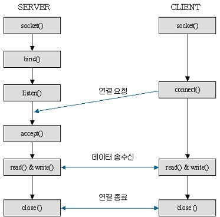

소켓이란?
- 로컬 호스트와 원격 호스트간 양방향 통신을 위한 엔드포인트.
- IP주소와 포트번호가 조합되어 소켓 주소로 구성되고, 전송계층에서 데이터 전달을 위한 식별자로서 기능한다.
- TCP 프로토콜을 사용하는 스트림 소켓, UDP를 사용하는 데이터그램 소켓, 원형 그대로의 패킷을 바로 어플리케이션으로 송신하는 로우(Raw) 소켓이 있음.
소켓 연결 시나리오

- socket() : 소켓과 Socket Descriptor 생성.
- bind() : Socket Descriptor를 지정된 IP주소/포트번호와 바인딩.
- listen() : 클라이언트의 접속 요청 대기
- accept() : 클라이언트의 접속 허용
- connect() : 클라이언트가 서버에 접속 요청
- read, write 또는 send, recv : 데이터 송수신 처리
- close() : 소켓을 닫음.
예제코드(java)
- 서버
1
2
3
4
5
6
7
8
9
10
11
12
13
14
15
16
17
18
19
20
21
22
23
24
25
26
27
28
29
30
31
32
33
34
35
36
37
38
39
40
41
42
43
44
45
46
public class ServerSocket{
public static void main(String[] args){
ServerSocket serverSocket = null;
Socket socket = null;
try{
//[1] 소켓 생성, bind, listen
//(1) 포트번호를 생성자로 넘기거나
serverSocket = new ServerSocket(9191)
//(2) bind() 호출
serverSocket = new ServeroSocket();
serverSocket.bind(new InetSocketAddress("localhost", 9191));
while(true){
//[2] accept() 는 통신에 사용할 별도의 socket 리턴.
socket = serverSocket.accept();
//연결된 클라이언트측 정보를 담은 객체. getPort(), getHostName(), getAddress()
InetSocketAddress isa = (InetSocketAddress) socket.getRemoteSocketAddress();
InputStream is = socket.getInputStream();
String message = null;
byte[] bytes = new byte[100];
is.read(bytes);
message = new String(bytes, "UTF-8");
System.out.println("클라이언트에서 보낸 데이터 : " + message);
OutputStream os = socket.getOutputStream();
message = "서버측에서 보내는 데이터";
os.write(message.getBytes());
os.flush();
is.close();
os.close();
socket.close();
}
}catch(Exception e){
}
}
}
- 클라이언트
1
2
3
4
5
6
7
8
9
10
11
12
13
14
15
16
17
18
19
20
21
22
23
24
25
26
27
28
29
30
31
32
33
public class ClientSocket{
public static void main(String[] args){
Socket socket = null;
try{
socket = new Socket();
//localhost가 들어가는 원래 IP주소와 포트는 클라이언트측에서 알고있는 상태
socket.connect(new InetSocketAddress("localhost", 9191));
byte[] bytes = null;
String message = null;
OutputStream os = socket.getOutputSteram();
message = "클라이언트측에서 보내는 메시지";
os.write(message.getBytes());
os.flush();
InputStream is = socket.getInputStream();
bytes = new byte[100];
is.read(bytes);
message = new String(bytes, "UTF-8");
System.out.println("서버측에서 보낸 데이터 : " + message);
os.close();
is.close();
socket.close();
}catch(Exception e){
e.printStackTrace();
}
}
}